Low calcium and magnesium: the debrief for week 9, Doubled up
Monday 07:40 · cubicle 6
He said he felt funny. His hands said the rest.

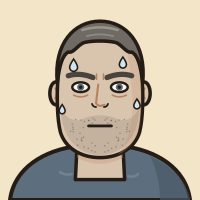
- Dean Marsden, 48. Sixteen and a half hours of pain in the top of his belly.
- Since about 04:00 he has “felt funny”, around his mouth and all over, and his hands cramp.
- Adjusted calcium 1.62 (normal 2.20 to 2.60). Magnesium 0.44 (0.70 to 1.00). QTc 510 ms.
- Why did a sore belly end in a claw hand and a long QT? And why would the calcium not stay up? Debrief 1 is about his pancreas; this page is about his calcium.
In every millilitre of blood
Calcium in blood comes in three forms, and only the free one works.
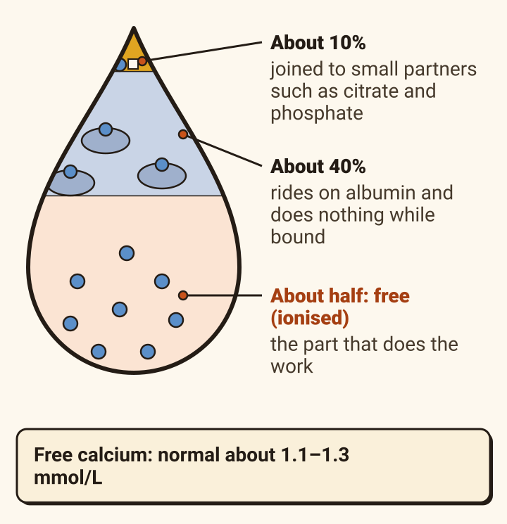
Only the free (ionised) calcium does the work. The lab’s total counts all three.
How the body keeps it there
Four organs keep it in a narrow band, and one hormone runs them.

Blood calcium is held in a narrow range by parathyroid hormone (PTH) and vitamin D.
- When calcium falls, the parathyroid glands, behind the thyroid in the neck, release PTH.
- PTH makes bone release calcium.
- PTH makes the kidney keep calcium instead of losing it in the urine, and makes the kidney switch on vitamin D (calcitriol).
- Switched-on vitamin D makes the gut absorb more calcium. As the calcium rises, PTH falls back (negative feedback).
Calcium 1.48 · albumin 33
A low albumin makes the total look low while the free calcium is fine. So the lab adjusts it.
![Two jars of blood. Normal albumin: many albumin carriers, each with a calcium on it, and free calcium floating. Low albumin (Dean: 33 g/L): fewer carriers, the same free calcium. Free calcium: the same in both. Total: lower when albumin is low. Adjusted calcium = total + 0.02 times (40 minus albumin in g/L). Dean: 1.48 + 0.02 times (40 minus 33) = 1.62. Each laboratory may use its own version. In the very sick the adjusted figure can mislead; a blood gas prints the free (ionised) calcium directly, and fast.](panc-calcium-d04-albumin.svg)
Less albumin means less bound calcium, so the total falls while the free calcium stays the same.
- In one intensive care study the adjusted figure missed about one in five low ionised calcium results (sensitivity 78%).
Breathing 28 when the crew arrived
Acid and alkali move calcium on and off albumin. Fast breathing moves it; it does not remove it.
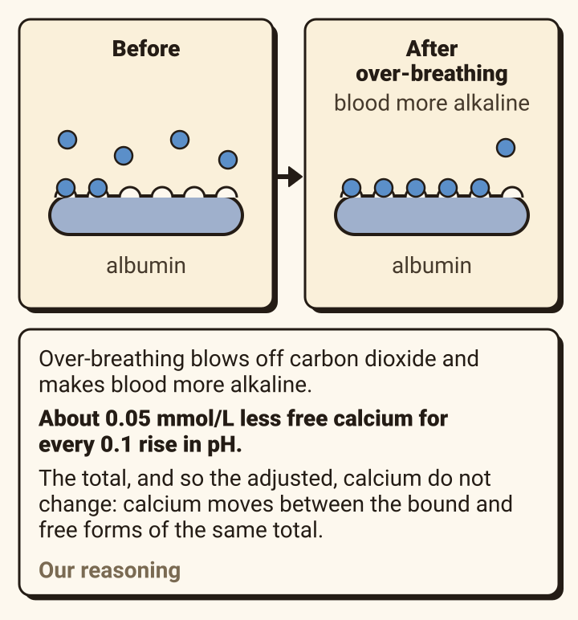
Fast breathing moves calcium from free to bound. It does not take calcium out of the blood.Our reasoning
06:10 · breathing 28, coached to 22
Tingling, a cramping hand, fast breathing at the door. Is this over-breathing?
- Over-breathing can cause tingling and hand spasm by itself. In ten volunteers, three minutes of it gave tingling fingers to all ten, with no significant change in ionised calcium.
- But it cannot explain a low adjusted calcium, a long QT or a low magnesium. Dean had all three.
- His gas showed no marked alkalosis (venous pH 7.41). At his arterial pH of 7.44, breathing accounts for about 0.02 mmol/L of his ionised calcium.
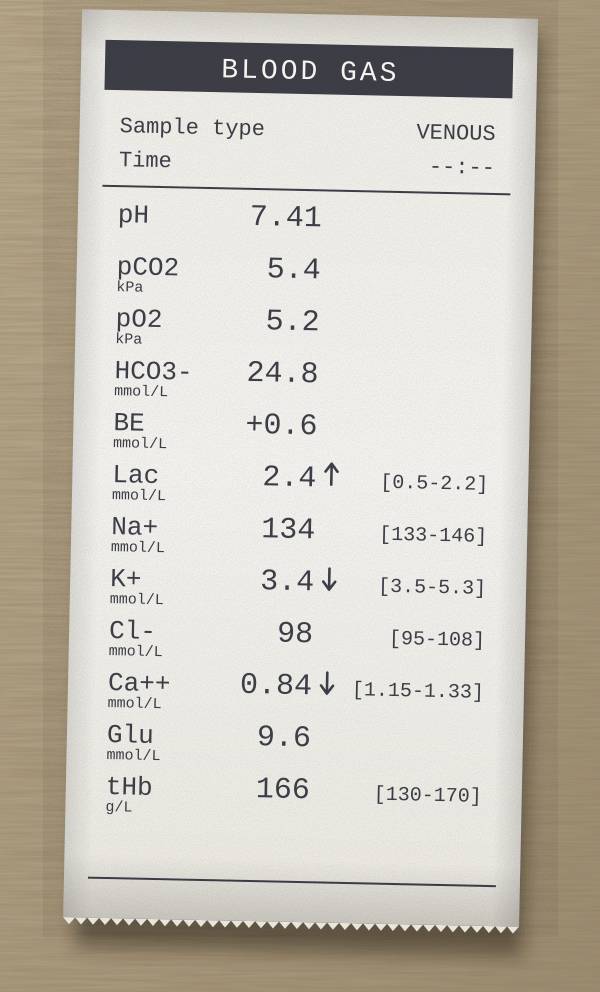
Monday 04:00 · “I feel funny”
Low calcium makes nerves fire on their own.

Calcium outside a nerve holds it back from firing. Ten times more calcium has about the same effect as moving the nerve 15 mV further from its trigger point (threshold). Take calcium away and the nerve fires unasked (neuromuscular irritability).
From 04:00 to 07:40
It starts at the mouth and fingertips and climbs to the throat.
![A ladder, mild at the bottom and more dangerous at the top. 1, tingling round the mouth and in the fingers (perioral and digital paraesthesiae). 2, cramps. 3, hands and feet cramp into claws (carpopedal spasm, tetany). 4, the voice box clamps shut (laryngospasm); the airways tighten (bronchospasm). 5, fits (seizures); confusion. 6, low blood pressure and abnormal heart rhythms. It usually starts with the tingling before the muscles join in. Symptoms usually appear below an adjusted calcium of about 1.9 mmol/L. But speed matters: a fast fall causes symptoms at levels a slow fall does not.](panc-calcium-d08-ladder.svg)
Read it from the bottom up. Dean had reached the third rung by 07:40.
His hands, 07:40
The claw: wrist and knuckles bent, fingers straight.
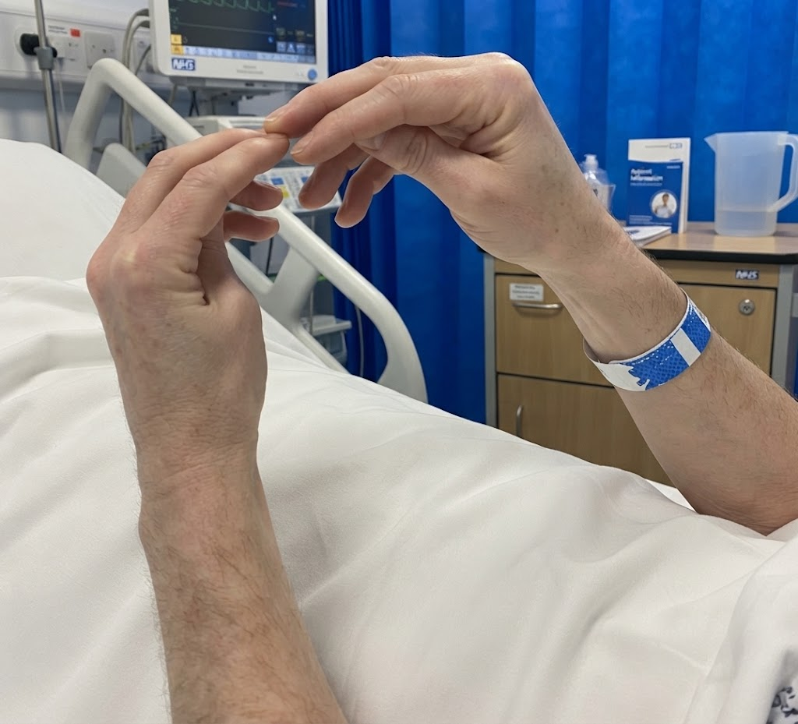
- The wrist and the knuckles bend; the fingers stay straight.
- The feet cramp the same way, which is why it is called carpopedal (hand and foot) spasm.
At the bedside
Two bedside tests, each asking whether a nerve is on a hair trigger.
Trousseau’s sign
- A blood-pressure cuff pumped above the systolic pressure and held for three minutes. The squeezed nerve (median nerve) runs short of blood, and an irritable nerve fires: the hand curls.
- The more reliable sign. A review reports it positive in 94% of people with low calcium and 1 to 4% of healthy people.
Chvostek’s sign
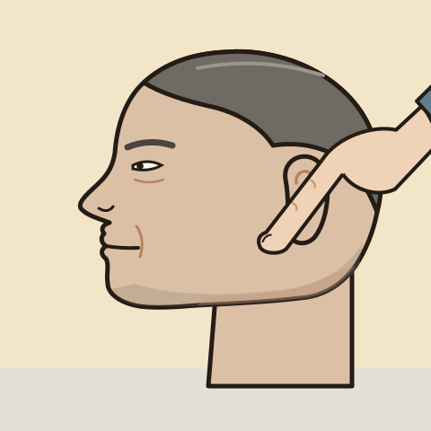
- A tap on the cheek about 2 cm in front of the earlobe, below the cheekbone, over the facial nerve: the upper lip twitches.
- A poor guide. In a survey of 3,434 adults, a positive sign went with normal to high calcium, not low.
QTc 510 ms
In the heart, low calcium stretches the flat part of the beat: a long QT.
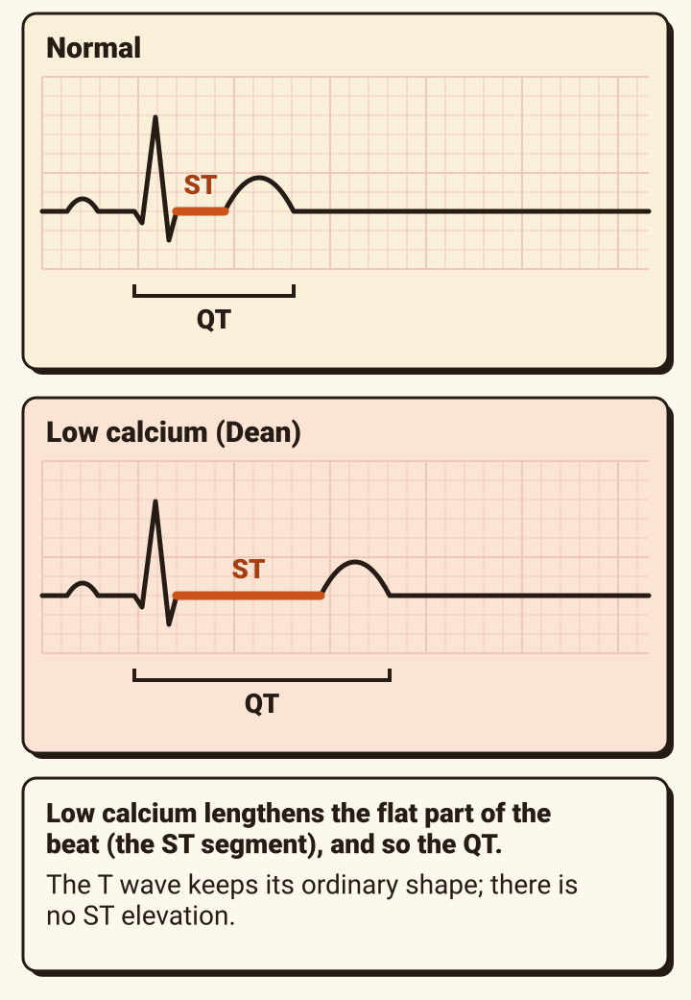

Swipe to see the whole film.
- It can produce ECG changes that mimic a heart attack: why an inferior heart attack was a fair worry for Dean.
- Low potassium and low magnesium lengthen the QT too. Dean had calcium 1.62, magnesium 0.44 and potassium 3.4.
- A long QT can lead to a twisting rhythm (torsade de pointes), though with low calcium this is less common than with low potassium or magnesium.
18% of hospital patients · 85% in intensive care
Every cause breaks the loop in one of four places.
![A loop down the page. Blood calcium falls. The parathyroid glands, behind the thyroid, release parathyroid hormone (PTH). PTH acts on: 1, bone releases calcium; 2, the kidney keeps calcium instead of losing it in urine; 3, the kidney activates vitamin D (calcitriol); 4, vitamin D makes the gut absorb more calcium. Blood calcium rises, and an arrow back up the side: PTH falls back (negative feedback). Four numbered breaks. 1, no hormone: damage at neck surgery, the commonest cause in hospital; hypoparathyroidism, autoimmune or genetic. 2, hormone that cannot be made or obeyed: low magnesium. 3, no vitamin D: severe deficiency. 4, calcium pulled out of the blood: pancreatitis; muscle breakdown and tumour lysis, where released phosphate binds calcium; large transfusions. Also critical illness and septic shock, kidney failure and drugs.](panc-calcium-d12-loop-breaks.svg)
Low calcium is common: about 18% of hospital patients and 85% in intensive care. Read down the loop; each red number is a place it breaks.
More on: pancreatitis · transfusion · drugs · magnesium.
Where the two debriefs meet
In pancreatitis, fat round the gland turns to soap, and the soap takes the calcium.
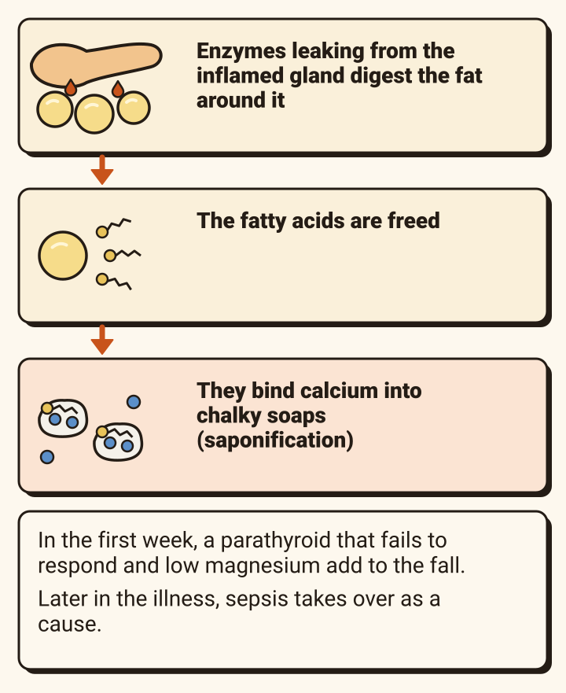
- A low calcium is common in severe attacks: a review reports it in 86% of severe and 39% of mild attacks. The signs of it are rare.
- Dean’s fell fast, within sixteen hours, because his magnesium was already low.Our reasoning
The pancreas itself: debrief 1, the bridge.
Remember week 1’s bleed
Blood bags carry citrate, and citrate grabs calcium.

Think of it whenever someone has had many units of blood.
Before you blame the illness
Check the drug chart: several drugs lower calcium, some through magnesium.
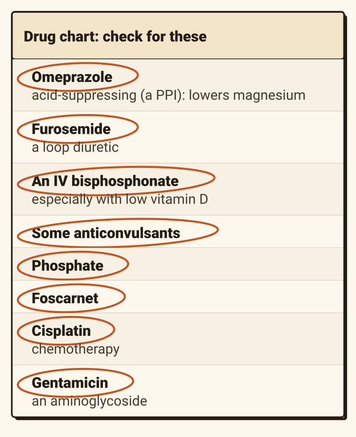
Acid-lowering tablets (proton pump inhibitors, PPIs) such as omeprazole lower calcium by lowering magnesium. Loop diuretics such as furosemide lower magnesium too.
PTH 3.2, back on Wednesday
Magnesium is the key the parathyroid needs, both to release its hormone and to be obeyed.
![Two panels. With magnesium: the parathyroid glands, a magnesium key in an open lock, an arrow of PTH reaching bone and kidney, ticked: PTH is released, and bone and kidney respond to it. Severe low magnesium: the glands greyed, the lock shut and no key, the PTH arrow faint, bone and kidney crossed: the glands stop releasing PTH, and bone and kidney respond less. With a low calcium a healthy gland should push PTH up; a normal PTH beside a low calcium is too low. Dean, back on Wednesday: PTH 3.2 pmol/L (1.6 to 6.9), with an adjusted calcium of 1.62.](panc-calcium-d16-lock-key.svg)
A low magnesium does not just add to a low calcium: it switches off the hormone that would correct it.
The bolus works, then it slips
Without magnesium, the calcium goes up and comes back down.
![A chart, in the case, of adjusted calcium against minutes after the bolus, with a dashed line where symptoms usually appear, about 1.9. Bolus alone: 1.62, then 1.92 at 10 minutes, 1.80 at 45, 1.66 at 90 and 1.63 at three hours. Bolus, then infusion: 1.92, 1.88, 1.84, 1.82. After a bolus the level begins to fall within about 30 minutes. Without magnesium any rise in calcium may be short-lived. Giving magnesium does not lift PTH or calcium at once; once it is replaced, calcium may right itself after about two days.](panc-calcium-d17-course.svg)
110 to 120 units a week
A drinker’s magnesium leaks out of a bucket.
![A bucket with a little magnesium in the bottom. 1, a tap above giving only a trickle: too little in, a poor diet. 2, a hole on one side: lost in the urine, heavy drinking increases the magnesium passed in urine. 3, a hole on the other side: lost from the gut, diarrhoea. 4, a hole in the bottom: lost through drugs, PPIs and loop diuretics. Only about 0.3% of the body’s magnesium is in the blood; half is in bone, a quarter in muscle. Low magnesium usually comes with low potassium: it makes the kidney waste potassium. Dean’s potassium: 3.4.](panc-calcium-d18-bucket.svg)
- Low magnesium is common in drinkers and in the poorly nourished. Dean drank 110 to 120 units a week, ate little and had lost weight.
- Severe is below 0.4 mmol/L; symptoms are more likely below 0.5.
- Potassium replacement works less well until magnesium is given.
Adjusted calcium 1.62 · QTc 510
How low, and does it show? The trust’s chart in one picture.
![The trust’s acute hypocalcaemia guideline as three cards, graded by adjusted calcium. Mild, 1.9 to below 2.2 mmol/L: no symptoms, calcium by mouth; symptoms, IV calcium. Moderately severe, 1.8 to 1.89 with no ECG change or circulatory trouble: 10% calcium gluconate 10 mL IV over 5 minutes with ECG monitoring. Severe, below 1.8, or below 1.9 with ECG changes or a struggling circulation: 10% calcium gluconate 20 mL IV over 10 minutes with ECG monitoring; call the senior on call; move to a monitored bed. Get an ECG if below 1.9 or symptoms; send U&E, bone profile, magnesium, PTH and vitamin D. The guideline’s table uses two grades only. National guidance: 10 to 20 mL in 50 to 100 mL of 5% glucose over 10 minutes, repeated until symptoms settle.](panc-calcium-d19-flowchart-plain.svg)
Dean: adjusted calcium 1.62 with a long QT. Find his box.
The first 10 minutes
The bolus: 20 mL of 10% calcium gluconate over 10 minutes, on a monitor.
![Three pictures in a row: a syringe, 20 mL of 10% calcium gluconate; a clock, over 10 minutes; a monitor, ECG monitoring throughout and after. No monitored bed free? A portable or crash-trolley monitor is acceptable for the first dose, so treatment is not delayed. A wide cannula, checked often: calcium is very irritant to veins. Never mixed with bicarbonate, phosphate or sulfate (including magnesium sulfate): it precipitates. Given too fast: flushing, a chalky taste, low blood pressure, a slow pulse, abnormal rhythms; cardiac arrest has occurred. Calcium boosts digoxin’s effect on the heart.](panc-calcium-d20-bolus.svg)
Slow, watched and on its own line.
The next 24 hours
Then hold it: an infusion, and a level at two hours.
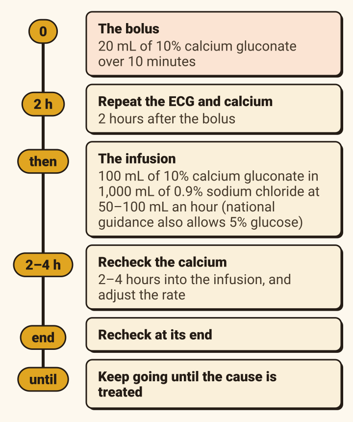
The bolus wears off. The infusion holds the level while the cause is treated.
Magnesium 0.44
Replace the magnesium alongside, and expect it to climb slowly.
![A chart of magnesium with bands: normal 0.70 to 1.00; symptoms more likely below 0.5; severe below 0.4. A dashed line climbs from Dean’s 0.44 at the start to about 0.68 the next day, still below normal. Magnesium sulfate 24 mmol (6 g) over 24 hours, in 500 mL of 0.9% sodium chloride or 5% glucose. Each gram raises the blood level by only about 0.04 mmol/L a day later. So 6 g from 0.44 reaches about 0.68 by the next day: one bag will not finish the job (our reasoning). One review advises correcting magnesium before calcium. Never in the same line as the calcium. Check your local policy: the magnesium guideline.](panc-calcium-d22-magnesium.svg)
Alongside the calcium, never in the same line.
Adjusted calcium 1.62 · both hands cramping
The nurse offers calcium tablets, and asks whether to wait for the PTH.
- IV calcium now. Calcium tablets are for a mild low calcium that causes no symptoms. Symptoms or a long QT make it an emergency.
- PTH and vitamin D should ideally be taken before treatment starts, but never wait for them before treating.
Still vomiting
Do not stretch a long QT further.
![A bar built from blocks: a normal QT, then low calcium, low magnesium and low potassium, reaching a dashed line: Dean, QTc 510 ms; a dashed block beyond it, a QT drug: then ondansetron, plus 15 ms. Each adds length; the sizes are a sketch. Low calcium, low magnesium and low potassium all lengthen the QT. Ondansetron lengthens it, more with higher doses; correct low potassium and magnesium before giving it. In the case, ondansetron lengthened Dean’s QTc by 15 ms and brought single early beats. Cyclizine: the BNF lists no QT caution.](panc-calcium-d24-qt-stack.svg)
Five more ward drugs. Tap each.
Metoclopramide, prochlorperazine and domperidone also list QT prolongation as a side effect.
What the morning showed
Every finding, and where it came from.
- The funny mouth and the cramping hand: an irritable nerve (7, 8, 9, 10).
- Calcium 1.48 became 1.62 adjusted, still far too low (4).
- Ionised calcium 0.84 at a pH of 7.41: not the breathing (5, 6).
- QTc 510: calcium, magnesium and potassium together (11).
- Magnesium 0.44 and a “normal” PTH of 3.2: the missing key (16), from a drinker’s bucket (18).
- The cause: soap round an inflamed pancreas (13). The speed of his fall came from his background, not the pancreas alone.Our reasoning
- The fix: a bolus on a monitor, an infusion, magnesium, cyclizine not ondansetron, and a repeat at two hours (19–24).
Take home
Five things to keep.
- The free calcium is the one that matters. Adjust for albumin, and a gas prints the free calcium directly.
- Tingling and a claw hand mean an irritable nerve. Measure the calcium before blaming the breathing.
- Symptoms or a long QT: 20 mL of 10% calcium gluconate over 10 minutes, on a monitor. Repeat the ECG and calcium at two hours.
- No magnesium, no lasting calcium.
- Keep drugs that lengthen the QT away from a long QT.
The other half of Dean’s morning: debrief 1, acute pancreatitis.
Where this comes from.
The sources this page is built from
- The trust’s acute hypocalcaemia guideline: Guidelines for the Management of Acute Hypocalcaemia in Adults (undated).
- Turner J, Gittoes N, Selby P. Society for Endocrinology emergency guidance: emergency management of acute hypocalcaemia in adult patients. Endocr Connect 2016;5:G7–G8. doi:10.1530/EC-16-0056
- Nickson C. Hypocalcaemia. LITFL Critical Care Compendium. litfl.com/hypocalcaemia. Burns E, Buttner R. Hypocalcaemia. LITFL ECG Library. litfl.com
- Doshi A, Davies G. Hypocalcaemia. Mind the Bleep. mindthebleep.com
- Wallis J. Bone profile interpretation; Managing electrolyte disturbances. Geeky Medics. geekymedics.com
- Ahmed A, et al. Hypocalcemia in acute pancreatitis revisited. Indian J Crit Care Med 2016;20:173–177. doi:10.4103/0972-5229.178182
Primary sources, used where those are silent
- Fong J, Khan A. Hypocalcemia: updates in diagnosis and management for primary care. Can Fam Physician 2012;58:158–162. cfp.ca
- Cooper MS, Gittoes NJL. Diagnosis and management of hypocalcaemia. BMJ 2008;336:1298. doi:10.1136/bmj.39582.589433.BE
- Armstrong CM, Cota G. Calcium block of Na⁺ channels and its effect on closing rate. PNAS 1999;96:4154–4157. doi:10.1073/pnas.96.7.4154
- Hujoel IA. The association between serum calcium levels and Chvostek sign. Neurol Clin Pract 2016. doi:10.1212/CPJ.0000000000000270
- Alanazi M, et al. Tetany in a young female not resulting from hypocalcemia. Cureus 2023. doi:10.7759/cureus.43521
- Schini M, Hannan FM, Walsh JS, Eastell R. Reference interval for albumin-adjusted calcium based on a large UK population. Clin Endocrinol 2021;94:34–39. doi:10.1111/cen.14326
- James MT, et al. Derivation and internal validation of an equation for albumin-adjusted calcium. BMC Clin Pathol 2008;8:12. doi:10.1186/1472-6890-8-12
- Steele T, et al. Albumin-adjusted calcium concentration should not be used to identify hypocalcaemia in critical illness. Crit Care 2013;17(Suppl 2):P446. doi:10.1186/cc12384
- Parasa M, et al. Cramps and tingling: a diagnostic conundrum. Anesth Essays Res 2014;8:247–249. doi:10.4103/0259-1162.134524. Stadler G, et al. Praxis 1995;84:328–334.
- El-Sherif N, Turitto G. Electrolyte disorders and arrhythmogenesis. Cardiol J 2011;18:233–245.
- Potestio CP, et al. The incidence, degree, and timing of hypocalcemia from massive transfusion. Cureus 2022. doi:10.7759/cureus.22093
- Jahnen-Dechent W, Ketteler M. Magnesium basics. Clin Kidney J 2012;5(Suppl 1):i3–i14. doi:10.1093/ndtplus/sfr163
- Mathews V, et al. A prospective observational study to identify the effectiveness of intravenous magnesium replacement in an intensive care setting. J Anaesthesiol Clin Pharmacol 2022;38:453–457. doi:10.4103/joacp.JOACP_530_20
- MHRA. Ondansetron for intravenous use: dose-dependent QT interval prolongation. gov.uk. BNF monographs (bnf.nice.org.uk): ondansetron, cyclizine, haloperidol, citalopram, erythromycin, clarithromycin, levofloxacin, methadone, metoclopramide, prochlorperazine, domperidone.
- Goodchild G, Chouhan M, Johnson GJ. Practical guide to the management of acute pancreatitis. Frontline Gastroenterology 2019;10:292–299. doi:10.1136/flgastro-2018-101102
Guidelines change. Checked October 2026.